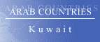

The Country & People of Kuwait
This page contains links to sites in Kuwait and Kuwait related sites.
For Middle East, North Africa, Arab and regional information visit Arab Countries
Hints:
- Use the "FIND" function in the Edit menu of your browser to search the page
- Use translating services in Chrome or Bing Bar in Internet Explorer to view page and/or linked websites in your language
General Info
* Business
* Culture
* Education
* History
* Media
* Organizations
* Travel
* Gateways
* Arab Countries
Kuwait, officially State of Kuwait, independent sheikhdom (1995 est. pop. 1,817,000), 6,177 sq mi (16,000 sq km), NE Arabian peninsula, at the head of the Persian Gulf, bounded by Saudi Arabia (S) and Iraq (N and W). The capital is Kuwait. It is a sandy and barren country. With more than 10% of the world's estimated oil reserves, Kuwait is a leading exporter of petroleum and has used some of the enormous profits for social improvements. In the 1960s the government launched a program of industrial diversification, successfully introducing oil refining and production of natural gas and fertilizers. The population is predominantly Arab and Sunni Muslim, although only half the inhabitants are native-born.
History
Kuwait, settled by Arab tribes in the early 18th cent., has been ruled since its inception by the al-Sabah dynasty. Nominally an Ottoman province, the sheikhdom became a British protectorate in 1897, remaining so until independence in 1961. Oil production began in the 1940s and was controlled by a joint British-American firm until 1974, when Kuwait nationalized most of the operations. Kuwait took part in the Arab oil embargo against nations that supported Israel in the 1973 Arab-Israeli War and is a member of the Organization of Petroleum Exporting Countries (OPEC).
In Aug. 1990, Kuwait was invaded and forcibly annexed by Iraq, an act that led to and was reversed by the Persian Gulf War. The war and widespread looting and intentional destruction by Iraqi troops devastated Kuwait, particularly its oil fields, but by the end of 1992 the country had repaired nearly all the damage and its oil output was at about the prewar level. Large areas of land, however, remained environmentally devastated. In 1992, opposition candidates won a majority of the seats in parliament; the al-Sabah family, however, continued to dominate the government.
An Iraqi military buildup near the Kuwait border led the U.S. to send troops to Kuwait in 1994.
Parliament was dissolved by the sheikh in May 1999; elections in July gave Islamist and liberal candidates the most seats. An edict (1999) by the sheikh giving Kuwaiti women the right to vote and run for office failed to win parliamentary ratification.
In the July, 2003, parliamentary elections Islamists won 42% of the seats, while liberals retained only a handful; government supporters won 28% of the seats.
The government finally succeeded in securing parliamentary ratification of political rights for women in May, 2005.
In Jan., 2006, Emir Jaber died; he was succeeded by Emir Saad al-Abdullah al-Sabah, who was himself in poor health. Emir Saad was soon removed from office for health reasons by the parliament, and the prime minister, Emir Sabah al-Ahmad al-Sabah, succeeded him. Clashing in parliament over consolidating voting districts, which opposition members wanted in order to prevent vote-buying, led the emir to call new elections. In the June vote, women voted for the first time, but no female candidate won a seat; reformers, both largely Islamists, won 36 of the 50 seats.
Differences between the cabinet and the parliament led the government to resign in Mar., 2008. The May parliamentary elections largely repeated the results of two years before, with Islamists again controling the largest number of seats. A power struggle over some legislators demands to be allowed to question the prime minister, Sheikh Nasser al-Mohammad al-Sabah, about the circumstances of an Iranian cleric's visit led the government to resign in November; the emir reappointed Sheikh Nasser the following month, and a new cabinet was formed in Jan., 2009.
In Mar., 2009, however, legislators and the government were again in a standoff, and when the government again resigned, the emir dissolved parliament. Sunni Islamists suffered some losses in the May elections, which also produced Kuwait's first female legislators; the emir again asked Sheikh Nasser to form a government. In Mar., 2011, the cabinet again resigned in order to avoid parliamentary questioning. Sheikh Nasser formed a new cabinet in May, but corruption protests led to that government's resignation in November.
Jaber al-Mubarak al-Hamad al-Sabah, the former defense minister, was appointed prime minister, and in December parliament was dissolved. The Feb., 2012, elections resulted in a majority of the seats being held by opposition Islamist groups, with Sunni Islamists winning nearly half the seats. Sheikh Jaber was reappointed as prime minister after the elections. In June, however, amid renewed tensions between parliament and the government, the courts ruled that the February elections were unconstitutional, and reinstated the earlier parliament, and Sheikh Jaber was again reappointed as prime minister in July.
The opposition boycotted parliament, however, and in October it was dissolved. The opposition also boycotted the Dec., 2012, elections (turnout was roughly 40%), objecting to new voting rules that could diminish its power; this led to the election of progovernment legislators, including a few women. The previous government was essentially reappointed. Opposition leaders denounced the result as illegitimate and mounted a series of protests. In June, 2013, the constitutional court ordered the parliament dissolved because of problems before the December vote. New elections in July were again boycotted by the opposition; turnout was roughly 50%. After the election Sheikh Jaber was appointed prime minister.
********
Copyright (c) 2012 Columbia University Press.
Used by permission of Columbia University Press.
General Info
General information, Cities, towns, municipalities, places, flag, maps, useful Information....
Business
Economy, reports, statistics, banks, directories, jobs, investment, promotion....
Culture
General resources, heritage, art, literature, photography, cinema, music, song, dance, cultural, scientific,
environmental, sporting entities & info....
Education
Schools, colleges, academies, universities, polytechnics, institutions, research, resources, projects....
History
Ancient & modern history, human rights, politics & political parties, related sites, articles....
Media
Newspapers, magazines, news, newsletters, news agencies, radio, TV, internet, articles, reports, cartoons....
Organizations
Government, ministries, overseas missions, embassies, corporations, organizations, industrial entities, centers,
public hospitals, institutions, societies, foreign entities....
Travel
Airlines, air, sea & coach charters services, travel, tours, guides, hotels, resorts, inns, hostels, health,
travel tips, weather....
Gateways
Gateways, search engines and directories to country related sites and information....
Arab Countries
Arab World: Middle East, North Africa, Arab and regional information. Resources to other Arab countries....
About Kuwait
General Information Also see Travel
- All Referer Earth & environment, history, literature & arts, people, places, plants & animals, religion, science & technology, sports & everyday life....
- AME Info Geography, people, government, economy, communication, transportation
- ArabInfo Overview, government, history, links
- ArabNet Overview, history, geography, business, culture, government, transport, tour guide, links
- Atlapedia Geography, climate, people, demography, religion, education, modern history, currency, other information....
- BBC Country Profile Key facts, figures and dates
- Britannica.Com Country info, land, people, economy, society, government, history, culture, maps, statistics, links....
- CIA World Factbook Map, geography, people, government, economy, communications, transportation, military, issues
- Country Reports Economy, defense, geography, government, people, anthem, map, news, weather, links....
- Encarta OnLine Info, land & resources, population, economy, government, history, other related items, links....
- Encyclopaedia of the Orient Geography, politics, economy, health, education, religion, people, history, anthem, cities....
- Expedia Almanac, fast facts, communications, on business, health & safety, transportation, traveler's directory
- Info Please General info, map, geography, government, history, land & people....
- Nation By Nation Info, government, human rights, news, geography, history, people, links....
- US Library of Congress Everything you ever wanted to know about Kuwait....
- World66 General info, cities, history, people, economy, getting around, getting there, links....
Cities, Towns, Municipalities & Places
- The Grand Mosque The first place to see when you visit Kuwait - Architecture, programs, location, annexes, mosques in Kuwait....
Flag, Maps, Useful Information....
- Cellular News Cellular coverage map, systems, frequencies....
- Ethnologue Languages
- Flag Description, meaning, history, interesting facts
- Flag Explanation, historical, military & political flags, subdivisions, national emblem....
- Maps on the internet All types of maps from different sources
- World Atlas A brief description, fast facts, flag, landforms, maps, traveller info, weather
- World Clock Local time, sunrise, sunset, GMT offset, daylight saving....
- World Paper Money Paper currency since 1960
General Info
* Business
* Culture
* History
* Media
* Organizations
* Travel
* Gateways
* Arab Countries
Business and Economy
General, Economy, Reports & Statistics
- Australian Department of Foreign Affairs and Trade Fact sheet (pdf) & travel information....
- Bilateral Relations with Japan Diplomatic, investment, economic cooperation, residents....
- Kuwait Chamber of Commerce & Industry Business center, economy, commercial directory, magazine, calendar....
- Kuwait and the IMF Position in the fund, reports....
- Kuwait Stock Exchange Trading data, reports, quotations, rules & regulations, brokers, company codes....
- MBendi Business information, news, industries, events
- Muslim Trade Network Trade reference directory and guide....
- Organization of the Petroleum Exporting Countries - OPEC Statistics....
- Ports Focus Ports, harbours, marinas....
- US Department of Energy Analysis, information, oil, natural gas, coal, electricity....
- US Department of State Country commercial guide 2001 (pdf)
- US Department of State Country reports on economic policy and trade practices - 1999
- World Bank Overview, news & events, data & statistics, publications & reports, development topics, projects & programs, Public Information Center
- World Trade Organization - WTO
Provides trade statistics, goods schedules, services schedules and MFN exemptions, trade policy reviews, dispute cases, and notifications
Banks
- Bank of Kuwait & the Middle East A fully interactive bank on the internet
- Burgan Bank Offers a full range of banking services
- Central Bank of Kuwait A flexible and stable monetary and financial system
- Commercial Bank of Kuwait (Tijari) Innovative products and services
- Jordan Kuwait Bank More than just a bank
- Kuwait Finance House Islamic bank. A non-interest based financial institution
- National Bank of Kuwait (Watani)
Banking & online services, economics & markets
Directories, Job Opportunities
- AskQ8 Dedicated to help you find the business, service or information in Kuwait
- Career Kuwait Online recruiters
- Kuwait Link Commercial search engine limited to businesses in Kuwait
- Kuwait's Top List Kuwait business, company profiles, hotels of Kuwait....
- Q8 Companies Alphabetical listing....
- ProLinks Kuwait Job & Career Center
Investment & Promotion....
General Info
* Business
* Culture
* Education
* History
* Media
* Organizations
* Travel
* Gateways
* Arab Countries
Art, Culture & Sport
General Resources, Heritage....
- Tareq Rajab (Private) Museum Events, manuscripts, costumes, metal Work, ceramics, orientalists, jewellery....
Art, Literature, Photography, Cinema....
- May Al-Saad Portraits & Galleries
- Q8 Art Galleries Various artists....
- Kuwait Pictures An original collection of recent pictures about Kuwait
- Internet Movie Database Movie & TV reports
Music, Song & Dance....
Cultural, Scientific, Environmental, Sporting Entities & Info
- Animal Info Threatened species, environmental and social data
- AquaStat Information on quantity and quality of freshwater and its availability
- BirdLife To determine the priorities for bird conservation in the region
- Green Line Environmental issues, articles, news....
- Al-Azraq Kuwait national football team. Coming events, songs, diwania, goals, cartoons, FM news
- Kuwait Dive Team Projects, enviromental issues, articles, contacts....
- Qadsia Sporting Club Establishment, members, presidents, superiority cup, sports....
General Info
* Business
* Culture
* Education
* History
* Media
* Organizations
* Travel
* Gateways
* Arab Countries
Education
Schools, Colleges, Academies, Universities & Polytechnics
- American School of Kuwait
For students who seek entrance into the finest of stateside colleges and universities
- British School of Kuwait Most rigorous, rounded and relevant British style education in Kuwait
- Gulf English School Bilingual, all-age school based upon the British national curriculum
- Kuwait English School KG to IGCSE A/S and 'A' Level
- Kuwait National English School Maximum individual attention
- Mohamed Saleh Aladsani School School info, scientists of the week....
- Kuwait University Official home page
- WorldWide Classroom University & adult education, K12 & teen....
Institutions & Organizations
- Institute of Banking Studies To prepare candidates for professional qualifications in banking & finance
- Public Authority for Applied Education and Training Supervise training centers and institutes affiliated to state ministries
Research, Resources & Projects
General Info
* Business
* Culture
* History
* Media
* Organizations
* Travel
* Gateways
* Arab Countries
History, Human Right & Politics
Ancient & Modern....
- Kuwait Past Timeline and rulers
- Political Geography Land and people, economy, government, history....
- World Statesmen Flags, chronology, rulers, governors, ministers, commissioners....
Human Rights, Politics & Political Parties....
- Amnesty International News, reports, urgent action. Latest annual report....
- Human Rights Watch Human rights developments & report
- National Committee for Missing & POW's Affairs Release of all Kuwaiti POWs and provide support and aid to their families
- Public Authority for Assessment of Compensation for Damages resulting from the Iraqi Aggression - PAAC
Responsible for all aspects of the UNCC claims process in Kuwait
- US Department of State Country reports on human rights practices
Related Sites, Articles....
- Constitution Background, history & news
General Info
* Business
* Culture
* History
* Media
* Organizations
* Travel
* Gateways
* Arab Countries
Visit Arab Media for satellite stations & Arab newspapers
Media
Newspapers, Magazines....
- Al-Dostoor Weekly newspaper
- Al-Forqan Monthly magazine
- Al-Hadaf Weekly newspaper
- Al-Anba Daily newspaper
- Al-Qabas Daily newspaper
- Al-Rai Al-Aam Daily newspaper
- Al-Seyassah Daily newspaper
- Al-Watan Daily newspaper
- Anhar Monthly magazine - Cultural
- Dar Al-Yaqza Assorment of magazines & newspapers - Cultural, economy, politics
- Homat Al-Watan Monthly magazine - Military
- Kuwait Times Daily newspaper
OnLine News, Newsletters, News Agencies....
- Al-Yaqza Online Includes Al-Yaqza magazine, Dalal magazine, Al-Iktisadia weekly newspaper....
- Kuwait Automotive Kuwait autos online news....
- Kuwait News Agency Online news, archives, pictures, services....
- Washington Post News & references
- Yahoo full news coverage
Radio, TV, Internet....
- Kuwait Business Chat rooms, forums, cinemas, classifieds, categorized directory, entertainment....
Articles, Reports, Cartoons....
General Info
* Business
* Culture
* History
* Media
* Organizations
* Travel
* Gateways
* Arab Countries
Visit Arab Organizations for Pan-Arab, middle East, North Africa and regional organizations
Government & Organizations....
Government, Ministries, Overseas Missions, Embassies....
- Chiefs of State and Cabinet Members
- Political Leaders Dates and figures of the leadership since 1950 (with pictures)
- Council of Ministers Legal advice & legislation, fatwa law, constitution, law library....
- Kuwait Investment Authority Improving the quality of investment operations and processes
- Ministry of Awqaf and Islamic Affairs >
- Ministry of Communications >
- Ministry of Education >
- Ministry of Finance >
- Ministry of Health Services, directory, announcements, news, employment, birds flu....
- Ministry of Interior Services, events, history....
- Ministry of Information Exploiting all media means towards helping the Kuwaiti society
- Ministry of Justice The administrative arm of the legal system in Kuwait
- Ministry of Planning Statistics, library....
- Ministry of Public Works Statistics, library....
- Embassy of Kuwait - Ottawa, Canada Information for Canadians, both businesspeople and tourists who want to visit Kuwait
- Embassy of Kuwait - Tokyo, Japan History, system of government, economy, environment, Kuwait way of life, consular affairs....
Corporations, Organizations, Public Hospitals and Industrial Entities
- Al-Rashid Hospital Private hospital in Salmiya
- Kuwait National Petroleum Company Core purpose is to provide a strategic role in the Kuwaiti oil sector
Centers, Institutions, Societies....
- Kuwait Red Crescent Society A voluntary humanitarian society providing help and assistance to the most vulnerable people
Foreign Entities
- British Embassy The embassy offers consular, commercial and visa services to members of the public....
- Embassy of Azerbaijan Explain the services on offer
- French Embassy - Commersial Section
French imports from Kuwait, French exports to Kuwait, market share....
- US Embassy US mission, consular services, latest news, US policy, journals, articles....
- British Counsil Library and information services, events, news, conferences, learn English
- United NationsUnited Nations Development Programme
- World Health Organization Tobacco & health, socio-economic situation
General Info
* Business
* Culture
* Education
* History
* Media
* Organizations
* Travel
* Gateways
* Arab Countries
Travel & Tourism
Airlines, Air, Sea & Coach Charters Services
- Kuwait Airways Information about all our flights and services
- Kuwait International Airport Flight information, statistics, weather, news, services, about Kuwait....
Travel, Tours, Guides.... More country info
- Q8 Diner An informative directory of restaurants and related news....
- Lonely Planet Travel information, maps, photos, background historical and cultural information
- Middle East Travel
Accommodation, history, after hours, travel info, addresses, cities & sights, business....
- Travel Guide General & travel info, money, duty free, health, accommodation, visas....
- World Travel Guide Accommodation, addresses, business, climate, essentials, resort, social, travel
Hotels, Resorts, Inns, Hostels....
- Marriott JW Kuwait Connected to the prestigious Al Salhiya shopping and office complex
- Messilah Beach Hotel Midway between the airport and the city centre
- M?venpick Hotel Kuwait
- Safir International Hotel Within walking distance of major attractions
- All Hotels Hotels, description & rates
- Hotels Travel Hotels directory & tourist information
- Q8 Hotels Kuwait Hotels
Health & Travel Tips
- Foreign & Commonwealth Office Travel information, country advise, latest travel updates....
- Travel Document Systems Passports, visas, travel documents
- US Consular Information Visa, health, crime/drug penalties....
Weather....
- Tide Calendar Tide times, sunset, sunrise and global position
- Weather Underground Temperature, humidity, pressure
- Yahoo Weather By city. Forcast, sunrise, sunset, humidity, wind, dewpoint....
General Info
* Business
* Culture
* History
* Media
* Organizations
* Travel
* Gateways
* Arab Countries
Visit Arab Gateways for Arab and other country links
Gateways to Kuwait
- Kuwait Information Directory of companies and organisations, rules, weather, events, language, links, recipes and other info
- Kuwaitiah.Net Directory and information - Pocket PC friendly
- Q8 Directory Directory and city guide
General Info
* Business
* Culture
* Education
* History
* Media
* Organizations
* Travel
* Gateways
* Arab Countries
Please link to this page.
https://www.hejleh.com/countries/kuwait.html
For comments, reports of deadlinks and adding your URL
Names, pictures and logos are the copyright of their respective owners.
(C)Copyright 1998-2017 Mazen Hejleh. All rights reserved.